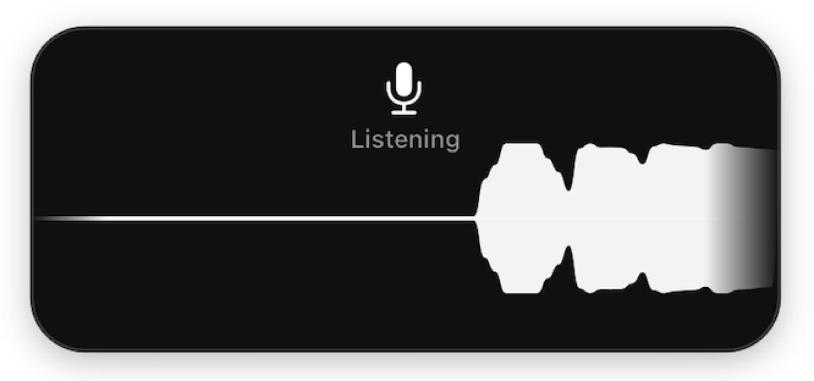
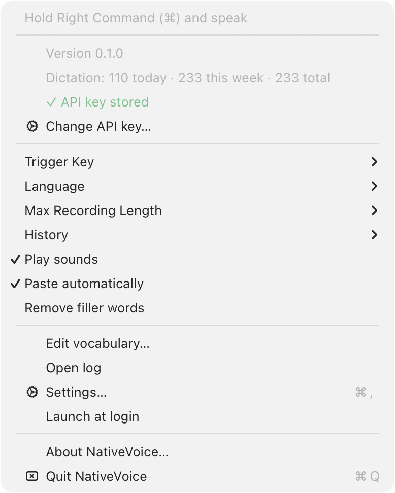

NativeVoice
キーを押して、話して、離す——カーソルの位置にそのまま文字が入ります。Macの音声入力は英語では優秀ですが、他の言語では不安定か、そもそも使えません。このアプリはその逆を目指して作りました。
ElevenLabs Scribe APIを使用。このアプリが対象とする言語そのもので他の選択肢と比べ、正しく聞き取れたのはこれだけでした。安定していて、信頼できる精度です。

大手ツールが「マイナー言語」扱いするものも含みます。すべて同じ扱い——ここに一等言語はありません。
右のCommandキーを押して話し、離すだけ。覚える画面もなく、入るモードもなく、最初にクリックする操作もありません。
ElevenLabsのキーはmacOSのキーチェーンに保存され、二度と表示されません。話した分の料金は直接ElevenLabsに支払います。
名前や専門用語こそ、音声認識が間違えやすい部分です。用語を書いたただのテキストファイルを、認識前に毎回読み込みます。
音声は文字化され次第、即削除されます。履歴は自分でオンにするまで無効で、オフにすると保存されていたものも消えます。
MITライセンス、約3,500行、依存ライブラリなし。署名・notarize済みで、自動更新もします——ただし音声入力中は絶対に行いません。
NativeVoiceは無料で、これからも無料です。時間の節約になったなら、コーヒーをおごってください。
コーヒーをおごる大手ツールが「マイナー言語」扱いするものも含みます。macOS標準ではオフラインモデルや自動句読点、連続リスニングはen-USにしか提供されません。
探し回る設定画面はありません。このアプリができることは、すべてここから行えます——見えているものがすべてです。
言語、トリガーキー、録音時間の上限、用語辞書。サウンド、自動貼り付け、フィラー除去。ElevenLabsの使用量と上限。そして、アプリが何をしたか・なぜしたかを平易な文章で説明するログ。

所要時間10分。ElevenLabsの自分のAPIキーを用意してください——話した分の料金は直接ElevenLabsに支払うので、他の誰かを経由することはありません。無料プランは月10,000クレジットで、音声認識は1分あたり330クレジット——つまり毎月約30分の音声入力が無料です。依存する前に最新の料金を確認してください。
NativeVoiceをApplicationsフォルダにドラッグして開きます。ウィンドウはありません。メニューバーから探してください。
ElevenLabs → Settings → API Keysでキーを作成し、すぐにコピーしてください——表示されるのは最初の一度だけです。
メニュー → ElevenLabs account → Set API key… → 貼り付け → Save。
microphone、Input Monitoring、Accessibilityの許可を求められたら許可してください。ダイアログは自動で表示されるので、探す必要はありません。
restartを促されたら応じてください。macOSはInput Monitoringの権限を再起動直後のプロセスにしか与えないため、再起動するまで何も動きません。
右⌘キーを押しながら話します。
依存ライブラリなし、隠し事なし。
git clone https://github.com/trustbe/nativevoice.git
cd nativevoice
./Scripts/build-app.sh 0.1.0 1